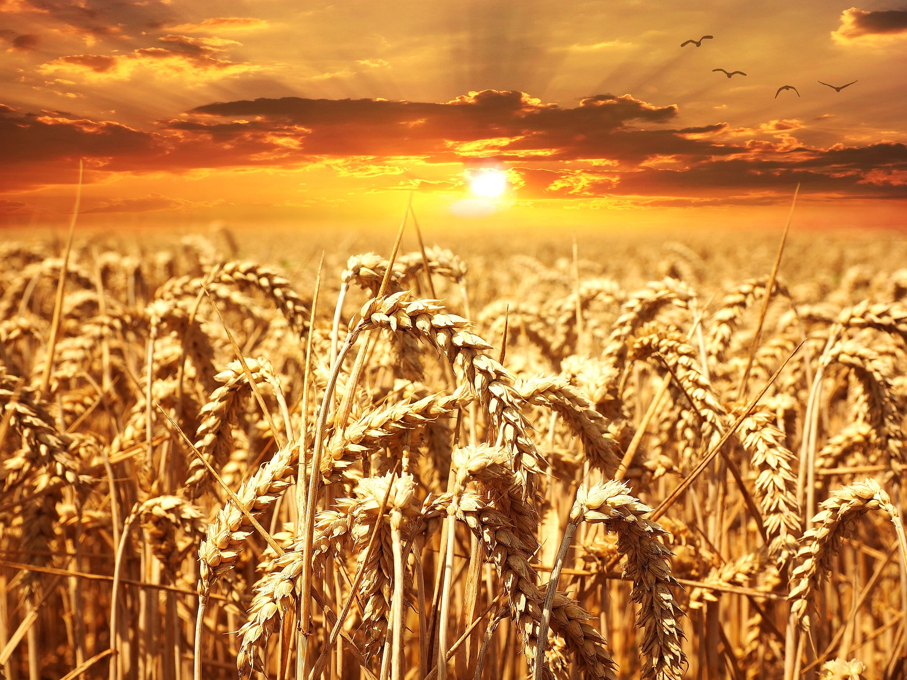

Texto
La Agricultura en Palestina en tiempos de Jesús
Religión Católica 3º ESO
En este proyecto vamos a descubrir cómo era la vida agrícola en Palestina en Tiempos de Jesús: qué se cultivaba, cómo se trabajaba el campo y cómo se relaciona todo esto con las parábolas de Jesús.
